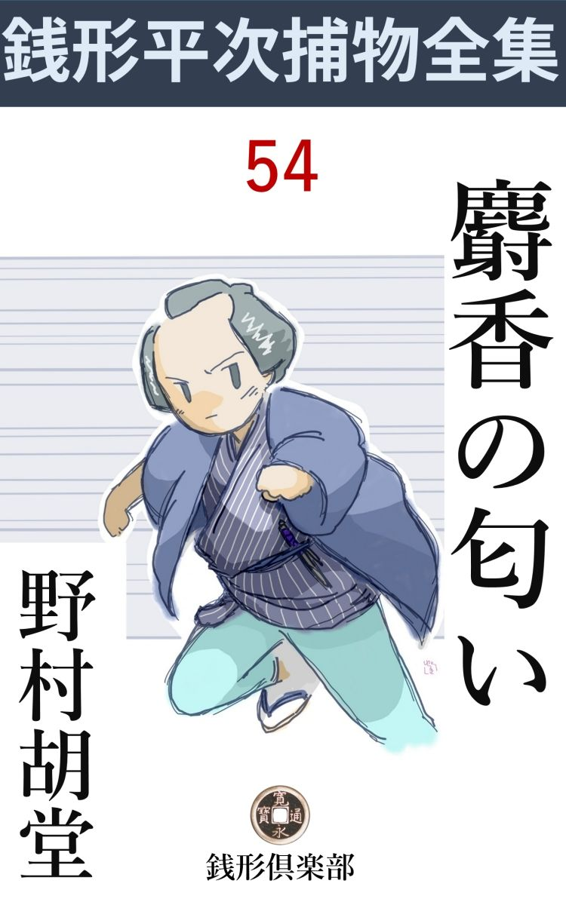
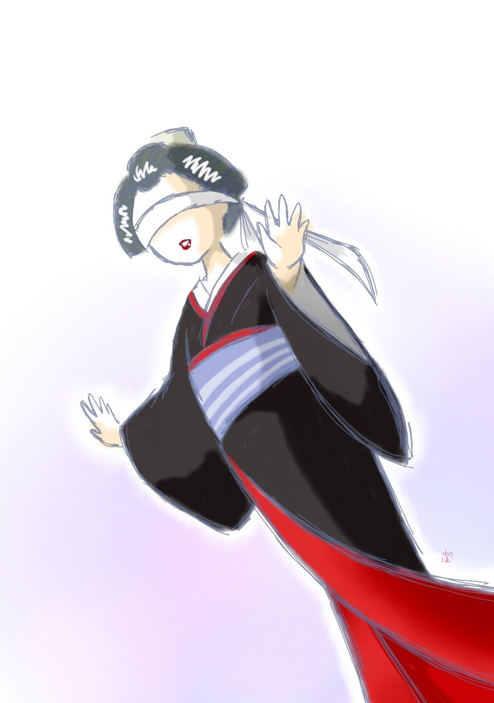

| 麝香の匂い: 銭形平次捕物全集第54話 (銭形倶楽部) | |
| 野村胡堂 | |
| ZENIGATA CLUB (2018) | |

一
「旦那よ------たしかに旦那よ」
「------」
盲鬼 になった年増芸妓のお勢 は、板倉屋伴三郎の袖を掴んで、こう言うのでした。
「ただ旦那じゃ解らないよ姐さん、お名前を判然 申上げな」
幇間 の左孝は、はだけた胸に扇の風を容れながら、助け舟を出します。
「旦那と言ったら旦那だよ、この土地でただ旦那と言や、板倉屋の旦那に決ってるじゃないか。幇間 は左孝で芸妓はお勢さ、ホ、ホ、ホ------いい匂いの掛け香で、旦那ばかりは三間先からでも解るよ。お前さんが側へ来てバタバタやっちゃ、腋臭 の匂いで旦那が紛 れるじゃないか、間抜けだねエ------」

「何て憎い口だ」
左孝は振り上げて大見得を切った扇で、自分の額をピシャリと叩きました。このとき大姐御のお勢が、片手に犇 と伴三郎の袖を掴みながら、大急ぎで眼隠しの手拭をかなぐり捨てたのです。
伴三郎の思い者で、土地の売れっ妓 お勢に対しては、左孝の老巧さでも、二目も三目もおかなければなりません。
「それ御覧、旦那じゃないか」
お勢は少しクラクラする眼をこすりました。二十二三でしょうが、存分にお侠 で、この上もなく色っぽくて、素顔に近いほどの薄化粧が、やけ な眼隠しに崩 れたのも、言うに言われぬ魅力です。
「盲鬼は手で捜 って当てるのが本当じゃないか。匂いを嗅いで当てるなんて、犬じゃあるまいし------私はそんな事で鬼になるのは嫌だよ」
伴三郎はツイと身をかわして、意地の悪い微笑を浮かべております。
これは三十そこそこ、金があって、年が若くて、男がよくて、蔵前切っての名物男でした。本人は大 通 中の大通のような心持でいるのですが、金持の独 りっ子らしく育っている上に、人の意見の口を塞 ぐ程度に才智が廻るので、番頭たちも、親類方も、その僭上 ぶりを苦々しく思いながら、黙って眺めているといった、不安定な空気の中にいる伴三郎だったのです。
「あら、旦那、そんな事ってありませんワ」
お勢は少し面喰いました。
「でも、俺は匂いを嗅ぎ出されて鬼になるなんか真っ平だよ」
「それじゃ、もういちど鬼 定 をしようか、その方が早いぞ」
白旗 直 八は如才なく仲裁説を出しました。昔は板倉屋の札旦那の伜でしたが、道楽が嵩 じて勘当され、今では伴三郎の用心棒にもなれば、太鼓も打つといった御家人崩れの、これも三十男です。
「それがいい、それがいい」
雛妓 や、若い芸妓達------力に逆 らわないように慣らされている女たち------は、こう艶めかしい合唱を響かせました。
杯盤 を片づけた、柳橋の清川の大広間、二十幾基の大燭台に八方から照されて、男女十幾人の一座は、文句も不平も、大きな歓喜の坩 堝 の中に鎔 し込んで、ただもう、他愛もなく、無抵抗に、無自覚に歌と酒と遊びとに、この半宵を過せばよかったのです。
遊びから遊びへ、果てしもない連続は、伴三郎にも倦 怠 でした。------何か面白いことはないか、と、褒美を懸 けて考え出したのが、この頃の子供たちがやる『盲鬼』又は『眼隠し遊び』という、およそ通や意気とは縁の遠い遊びだったのです。
この遊びは刺戟的で馬鹿げていて、思いの外皆なを喜ばせました。盲鬼 が危ない手付きで追い廻すと、伴三郎と直八とそれに幇 間 の左孝、芸妓大小取交ぜて十人あまり、キャッキャッと金魚鉢をブチまけたように、花束を砕いたように、大広間一パイに飛廻るのです。
中には、首っ玉へ噛 り付かれたり、髪を毮 られたり、わざと畳に滑って転げたり、きわどいことまでして見せました。板倉屋伴三郎は、それを苦り切った顔で、実は面白くて面白くてたまらない様子で見ているのでした。
雛妓 たちも芸妓も皆な並べて、
「------いっちく、たっちく太右衛門どんの乙姫 様は、湯屋で押されて泣く声聞けば、ちんちんもがもが、おひゃりこ、ひゃりこ------」
と声を揃えて歌いながら数え、一人ずつ抜かして、最後に残った一人を鬼にするのです。
残った二人は白旗直八と幇間 の左孝、二人共、鬼になりたくてなりたくて仕様のないという人間------雛妓を追い廻して頬 摺 りするのを鬼の役得と心得ている人間でした。捕まえてさんざん厭がらせをした上、わざと名を間違えると、いつまでも鬼にいられるという術 もあったのです。
二
雛妓 たちが若い張りのある声で『いっちく、たっちく太右衛門どん------』を繰り返しました。鬼にされたのは白旗直八。
「そんな間の伸びた------いっちく、たっちく------があるものか。のけ者にされちゃ、白旗様の前 だがこの左孝が不服だ。もう一度やり直して貰おうか」
幇間 の左孝は大むくれです。『いっちく、たっちく』はたった二人のうちの一人を選ぶ場合はテンポを伸すか、縮 めるかの違いで、奇数にも偶数にもなり、雛妓達が望むままの人を選ぶことが出来たのです。
「間の伸びたのは師匠の鼻の下さ、いっちくたっちくだって除 けて通るよ」
お勢は相変らず毒舌です。
「言ったな」
「捕まえられて頬っぺたを嘗 められる方が災難さ。目隠しが低い鼻の上へずっこけて選み討ちに捕まえるんだもの、やり切れないよ。御覧よ、先刻お前さんに嘗められたお駒ちゃんの頬が、火 膨 れになったじゃないか」
お勢がズケズケとやりながら、一番若くて美しい芸妓お駒の頬を指すのでした。
「へッ、自分が嘗められないんで口惜しかろう」
「呆れたよ」
際限もありません。
「もう宜かろう。二人が噛み合っていると際限もない、------鬼は二人の方が面白いから、左孝も鬼になるがいい、その代り灯 を消して捕まえるんだ」
伴三郎はこんな事を言い出します。
「それ、旦那があんなに仰しゃるじゃないか。鬼になるのは私のような仏性 の者に限るとよ」
左孝と白旗直八は背中合せに立って目を縛り、同時に広間中の灯を皆な消しました。
めんないちどり、手の鳴る方へ、------
丸くなった男女の輪が、ドッと崩 れると、それを追って二人の盲鬼が、手拍子と、哄笑と、悲鳴の中を泳ぎ廻ります。
いつの間にやら伴三郎は席を外 し、お勢もお駒も見えなくなりました。左孝の悪ふざけに驚いた女共は、縁側へ、次の間へ、廊下へと灯 を追って溢 れ、それを追って二人の鬼は、薄暗い中をどこまでも、どこまでもと追いすがります。
が、しかしその歓楽も尽きる時が来ました。恐ろしい血の終局 が、熱狂した興奮から、氷のような恐怖へ、十幾人の一座を叩き込んでしまったのです。
「わッ、た、大変ッ」
下女の上ずった声が、次の間から響くと、恐ろしい予感に、騒ぎは水をぶっ掛けたように鎮 まりました。
「来て下さい、大変ッ」
続いてもう一度。
「------」
十人ばかりの妓 は、一瞬闇の中に顔を見合せると、物をも言わずに隣りの室へ突進しました。
「灯 り」
真先のお勢が叫ぶと、二つ三つ先の部屋に片づけた燭台が誰の手からともなく次の間へ運ばれます。
「あッ、白旗の旦那だ」
驚いたのも無理はありません。御家人崩れで、今こそ幇 間 とも用心棒ともつかぬ事をしておりますが、まだまだ腕っ節には自信を持った白旗直八が、盲鬼の目隠しをしたまま、自分の脇 差 で後ろから頸筋を縫われて死んでいたのです。
三
歓楽 の馬鹿騒ぎは、重っ苦しい恐怖の騒ぎに変りました。階 下 で呑み直す支度をしていた伴三郎も、左孝の悪 巫 山 戯 を逃避して廊下で涼んでいたお駒も、重い緊張した顔を持って来ました。
「左孝はどこへ行った？」
「先刻から見えないぞ」
この騒ぎの中へ、剽軽者 でお先っ走りの左孝が顔を出さない筈はありません。
「あいつだよ、平常 から白旗の旦那と仲が悪かった」
お勢です。
「馬鹿な事を言っちゃならねえ、人が聞いたらどうする」
清川の主人の喜兵衛が駆けつけたのです。
「ここだよ、ここにいるよ」
下の方から男衆の声が聞えました。
「何がいるんだ」
「左孝師匠の死骸はここだよ」
「あッ」
二度目の変事に度を失った人々は、雪崩 のように二階から駈け降りました。石 燈 籠 の灯のほのかに照らした中庭------、一畳敷もあろうと思う庭石の上へ、目隠しをしたままの左孝が、叩き付けられた蛙 のように伸びて、見事に眼を廻していたのです。
「番所へお届けだ」
「いや医者が先だ」
深刻になり行く騒ぎの中へ、ガラッ八を従えた銭形平次と、お神楽 の清吉を従えた三輪 の万七と、何と言うことか、裏と表から、いっしょに清川の敷居を跨 いだのでした。
「お、銭形の、又逢ったね」
「番所に居合せたんでね、三輪の」
平次はそのまま引返そうとしました。
「ちょうどいい。銭形の兄哥には負け続けだ。仕切りから念を入れて、一緒に手を着けたら、満更負けてばかりもいないだろう。一緒に敷居を跨いだのをきっかけに、この殺しを二人で扱って見ようじゃないか」
「------」
三輪の万七は大変なことを言い出しました。
「盲鬼を二人やっつけるなんざ、大して企 らみのある仕事じゃあるめえ。夜の明ける前に下手人を挙げたのが勝ということにしちゃどうだ」
「------」
「こんど負けたら、俺は坊主になる」
万七はこうも言うのでした。
「あっし も銭形の親分が負けたら坊主になりますぜ、三輪の親分」
ガラッ八はたまり兼ねて口を出します。
「坊主っ振りはいいだろうな、八兄哥 。とんだ罪作りだね、フ、フ、フ」
万七の舌は毒を含みますが、貫禄の違いでガラッ八の八五郎もその上応酬が出来ません。唇を噛んで、少し金 壺 な眼を光らせました。
「三輪の兄哥の前だが、企 らんだ殺しなら、すぐ解るが、相手が目隠しをしたのを見て、急に殺す気になったのだと、こいつは容易に解らないぜ、------とても一と晩じゃ」
平次は首を振りました。偶 発 的 に機会を掴んで決行された殺しは、理屈でも手掛りでも、手繰りようのないのが普通だったのです。
「とにかくやって見よう。白旗直八は身を持 崩 しているが、元が元だから、女や子供に殺される人間じゃねえ。左孝を二階から突き落したのと同じ人間なら、すぐ解る筈だ」
万七はそんな事を言って左孝の手当てをしている部屋へ行きましたが、打ちどころが悪かったのか思いの外の怪我、まだ正気に返ってはおりません。
「八、皆なの身許を洗って来るんだ。白旗直八や左孝は言うまでもねえが、板倉屋伴三郎の女出入り、------世間で評判を立てているお勢との仲や、その他の事も、解るだけ洗って来い。町内の髪結床と湯屋と、番所と、板倉屋の向う三軒両隣を当ったら、殺しの筋だけでも恰好がつくだろう」
「合点、そんな事なら朝飯前だ」
ガラッ八は飛出します。
その後ろ姿を見送った平次は、静かに二階へ登ると、主人喜兵衛に案内されて、何より先に間取りの具合を見るのでした。
「燭 台 はどこに置いてあったんです。板倉屋の旦那はどこにいました」
矢継早な平次の質問を浴びると、
「待って下さい親分さん。私じゃ解りません、お勢を呼んで来ましょう」
喜兵衛は兜 を脱ぎます。
「お勢も呼びたいが、------その前に訊きたいことがあります。板倉屋の旦那は、鬼ごっこの途中で階下へ行ったんですね」
「三輪の親分もそればかり気にしていましたよ、------板倉屋の旦那が二階から降りたのは、二階の広間の灯りが消えてしばらく経ってからで、死骸を見つけるほんの少し前でしたよ」
「別に変った様子は？」
「いつもの通りで、------やれやれ追い廻されるのも楽じゃない。下で落着いて一パイやるから、そっとお勢を呼んでくれ------と仰しゃいましたが、お勢を呼ぶ前にあの騒ぎで------」
「板倉屋の旦那と、白旗直八とは、仲が良くなかったという話もあるが」
平次の問は次第に突っ込みます。
「勘当された札旦那の次男を、義理に絡 んで引取ったのですが、用心棒とも朋 輩 ともつかず伴れて歩きました------」
「いずれ面白くない事があったとすれば、鞘 当 て筋だろう」
「へエ------、どちらも若くて男がよくて、お金のあるのと、腕の立つのと、我儘なのと、少し悪党がったのですから、女は迷いますよ」
喜兵衛は当らず触らずの事を言いますが、伴三郎と殺された直八の間が、案外世間で見るように無事なものでなかったことは事実のようです。
四
妓共 は大小こき交ぜて、吹き溜りの落椿 のように、広間の隅っこに額を突き合せ、疑いと悩みと不安とにさいなまれた眼を見張っておりました。
「お勢、------お前の知ってるだけを、みんな話してくれ。隠したり、庇 ったりすると、白旗直八は浮びきれないよ」
銭形平次は、隣りの部屋に一人ずつ呼んで人と人との関係やら、宵からの馬鹿遊びの始末を訊いております。
「親分、これでみんなですよ。あとは何にもありゃしません」
お勢の妖艶な顔も、さすがに蒼く引緊って、日頃の寛濶 さは微 塵 もありません。
「板倉屋の旦那の物好きで、盲鬼 を始めた、------板倉屋は鬼になるのを嫌ったが、左孝は何んべんでも鬼になった、------不思議なことに白旗直八は鬼が当らなかった------と言うんだね」
「え」
「板倉屋は雲南 麝香 の掛け香を持っているから、一二間離れていても解るので、遠慮して誰も捕まえなかったと言うんだろう」
「え」
「それをお前は捕まえた、どうするつもりだったんだ」
「一度くらい鬼にしたかったんですよ」
「板倉屋が嫌がると、又鬼 定 めをやったそうだな、それを言い出したのは？」
「白旗さんですよ」
「------いっちく、たっちく------を伸して言って、わざと白旗直八に当てさせたのは誰の細工だ」
「私ですよ、親分、私がこども 達に言いつけたんです」
「本当かお勢、大事なところだ」
「私の言うことでなきゃ、こども 達は聞きゃしません」
「燭 台 を取払わせたのは？」
「それは板倉屋の旦那でした。暗くした上そっと階下へ降りて静かに一杯やろうと仰しゃるんで」
お勢の言葉には何の淀 みもありません。
「お前と白旗直八とは、他人じゃなかったようじゃないか」
平次はどこで聞いたか、こう誘導 的な問いを持ちかけました。今では板倉屋伴三郎の寵者 で通っているお勢が、かつて白旗直八に関係があろうとは、誰も知ってはいなかったのでした。
「どうしてそんな事を？」
「------」
平次は黙って笑います。が、その自信のある眼差しは、正面からお勢の表情の動きを見据えているのでした。
「でも、五年も前のことなんです------私は一本になったばかり、白旗さんだって部屋住みで、長くは続かなかったんですよ」
お勢は眼を伏せました。旧 い悔恨が、チクチクと胸に喰い入る姿です。
「板倉屋はそれを知っていたのか」
「え」
「------」
「でも、板倉屋の旦那はそんな事を恨みになんか持っちゃいません。昔の昔の事なんですもの。私共稼業の者にしちゃ一年は十年で」
「------」
平次の眼が依然として和 まないのを見るとお勢は淋しそうに首を垂れました。
「それに、近頃は、お駒さんに夢中なんですもの、------私のことなんか」
「そいつは初耳だ、嘘じゃあるまいな、お勢」
「嘘なんか言やしません。------そのお駒さんが、白旗さんに気があったことも親分さんはご存じないでしょう------でもこんなにみんな言ってしまっていいでしょうか」
お勢は悲しそうでした。この陽気でお侠 な女の一皮下には、妙な悲劇的な情緒 のあるのを、平次はまざまざと見せつけられたような気がしたのです。
五
「銭形の兄哥 、左孝は口をきいたよ」
万七は得意な鼻をうごめかして、平次を迎え入れました。
「何て言ったんだ、三輪の」
「廊下へ出ると、いきなり、恐ろしい力で突き飛ばされ、欄 干 越しに、庭へ落ちたことまでは知っているが、その後は、何にも知らねえ------と」
「俺が聞いて見よう」
「それもよかろう」
平次は、万七の皮肉な目を背 に感じながら、左孝の枕元へ中腰になりました。どうやらこうやら、人心地ついた左孝は、まだ纏 まった事を話せるような容態ではありませんが、それでも、眼だけは物憂そうに動かしております。
「俺が判るだろうな」
「------」
「お前さんが、二階から突落されたのと、白旗直八が殺されたのと、どっちが先なんだ」
「私の方が先で」
左孝の唇は繃帯 の中にわずかに動きます。
「どうして解った」
「私が廊下へ出たとき、白旗の旦那は、まだ、女共を部屋の中で追い廻していました」
「お前を突きおとしたのは、男の手に間違いあるまいな？」
「へエ」
「その時、掛け香の匂いがしなかったかい」
「とんでもない」
「灯りを消して盲鬼 が始まった時は、二階に男が二人しかいなかった筈だ。板倉屋の旦那と、白旗直八だ。その白旗直八はお前と同様目 隠 しをしていた」
「へエ------」
左孝はそんな事に始めて気がついた様子です。
「板倉屋でないとすると、白旗直八だ。白旗直八は殺されているんだぜ」
「私も殺されかけましたよ、親分さん、------白旗の旦那が私を突き落した後で、誰かに刺されたとしたら、どんなものでしょう」
「それもないことではあるまい。が、白旗直八を怨 むのは誰だ」
「お勢ですよ、------親分、大きな声じゃ言えませんが」
「何だと」
「白旗の旦那は、お駒と板倉屋の旦那の仲を取持つと思ってこの左孝を怨んでいましたし、お勢は自分の浮気を棚に上げて白旗の旦那がお駒に気があるのを妬 いていましたよ」
「フーム」
筋はよく通りますが、そんな簡単な事で、この事件の謎が解かれるでしょうか。平次は深々と腕を拱 きました。
「銭形の兄哥、考えることはあるまいよ、下手人は板倉屋の伴三郎さ。左孝はそれを庇 っているんだ」
三輪の万七は心得ております。
「そんな事はあるまい」
「『いっちく、たっちく』と長々と引伸ばして、白旗直八に鬼を当てたのは伴三郎の指図だ」
「いや、それはお勢だ------お勢がそう言ったぜ、兄哥 」
「銭形のにも似合わない。お勢は板倉屋を庇っているんだよ、妓 共 は伴三郎がお勢に言いつけて細工をさせたのを、みんな聞いて知っているぜ」
「フーム」
平次は完全に万七にやり込められました。
「白旗直八は御家人の冷飯喰いだが、腕は相当に出来ている。眼を開いていちゃ、伴三郎風情に殺される筈はねえ、------それに、居候 の癖 に女出入りで伴三郎とは仲が悪かったそうだ」
「------」
万七の言うのは一々尤 もですが、平次にはまだ腑 に落ちない事ばかりです。
「銭形の、引揚げようか。約束の夜明けにはまだ三刻 もあるが、俺はここに用事がねえよ」
「えッ」
「今頃は清吉が板倉屋を伴れて、番所へ行った筈だ。これから行って一と責め責めて見よう」
三輪の万七の誇 らしさ。
「そいつはいけねえ。兄哥、板倉屋は唯の金持の旦那だ、人なんか殺せる男じゃねえ。この世を面白くおかしく暮す人間が滅多なことで人を殺すものか」
「相変らず道学 の御談義だ。人を殺すに暮し向きの事なんか考えるものか」
「だが、板倉屋と白旗直八は、腹の底では敵同士だと言ったね、三輪の」
「その通りさ」
「なら、プンプン麝香 を匂わせた板倉屋が、側へ寄って自分の刀を抜くのを待っている筈はねえ。白旗直八は自分の腰の物で刺されたんだぜ」
平次はようやく鋭い鋒鋩 を現わしました。
「そいつは何とも言えねえよ、腰の物は鞘 ごと抜いて、どこかへ置くこともある」
「鞘は白旗の腰にあるんだ、そんな筈はねえ」
「とにかく、俺の見込みが違ったら坊主になるまでだ。銭形の、夜の明ける迄が楽しみさ」
三輪の万七はもう一つ皮肉な微笑を残してさっさと出て行ってしまいました。
六
「親分さん、------お願いですが」
「何だ、お勢じゃないか」
平次は思い詰めた女の眼を見ました。
「板倉屋の旦那などのご存じのことじゃありません。何とかして助けて上げて下さい」
「何を言うんだ、お勢。俺も板倉屋を疑っているんだよ、ことによると、俺の方が坊主になるかも知れない」
平次は冷静な笑いに紛 らせて、奥へ行きそうにするのでした。
「親分さん、待って下さい、実は、実は------」
「私が殺しました------なんて言わないでくれ、下手人がもう一人増えると、手数が多くなるばかりだから」
「でも本当に私が殺したら、どうしてくれます。親分さん」
「白旗直八が目隠しをしたままのを刺したのかい」
「え」
「殺すほどの怨みは何だ」
「あの男が五年前のことをぺらぺら喋舌 ったばかりに、私は板倉屋の旦那に捨てられそうになりました。これほど口 惜 しかったら、殺しても不思議はないでしょう」
「よしよし、お前の言う事を本当にしよう。が、縄を打つ前に見せたいものがある。ちょいと来るがいい」
「------」
平次はお勢をつれて、死体を置いた部屋へ入って行きました。
「頸筋の瘡 は、後ろから刺したんだ。いいか、ぼんのくぼは大変な急所だが、喉 や胸と違ってあまり血が出ねえ、------ところで、少しばかりの血が、目隠の手拭の下へ付いているのはどう言うわけだ」
「------」
「解らないか、お勢、曲者は、白旗直八が目隠しを取ったところを刺し、何か誤 魔 化 すために、殺してから又目隠しをしたんだ、------死骸へ目隠しをして逃げるような、手の混んだ芸当は、お前に出来るかい------」
「------」
「一言もあるめえ。この下手人 は、三輪の兄哥が睨んだ板倉屋でもなきゃ、名乗って出たお前でもないのさ。まアまア俺に任せて置きな」
「親分さん」
お勢は泣いておりました。
平次はもういちど広間に取って返すと、妓共を一人一人調べ上げて見ました。が、何にも解りません。解ったことは、真っ暗な部屋の中で、鬼がどこにいると見当もつかないのに、十幾人唯滅 茶 滅 茶 にキャッキャッと言っていたというだけです。
「お駒は？」
「師匠の世話をしていますよ」
まだ一本になったばかりのお駒が、赤の他人の、初老近い幇間 の世話を焼くのは、余程どうかした心掛けでなければなりません。
「あの妓 は、根が優しいから、それ位のことはするでしょうよ」
主人の喜兵衛はそんな事を言っております。
真夜中過ぎまで何の変化もなく、検屍 も翌る朝になったので、一応妓共を帰そうか------とも思いましたが、若しその中に下手人が交っていると、容易ならぬ手落ちになります。
平次は日頃の遣り口にはない事ですが、素知らぬ顔をして、広間の中に不安におののく一団の美しい群 を見ておりました。
七
「親分、解った」
「何だ、八」
「夜っぴて飛んで歩くつもりだったが、いい塩梅に、子刻 前にみんな解ったぜ」
八五郎の顔、------獲物を咥 えた猟犬のような顔を見ると、平次はそっと物蔭に呼びました。
「順序を立てて言え、まず、何が解った」
「白旗直八は御家人の冷飯食いの癖に、名代の色師 だ」
「それは解っている」
「さんざんの道楽で勘当になり、板倉屋にころげ込んだ。さいしょは伴三郎と似た者同士で仲よく遊び廻ったが、板倉屋の寵者 のお勢が、五年前白旗に騙 されて道行までした事があると解って二人の仲は次第に面白くなくなった」
「それも解っている」
「ところが、板倉屋は近頃お駒に夢中で、こんどこそは仮 親 を立て、引き祝いもさせて、家へ入れようというところまで話が進んだ」
「フーム」
「板倉屋の親類の手前、お駒の本当の親は、武家とか浪人とか言うことになっているが、それがどうも細工らしい」
「------」
平次は次第に緊張しますが、八五郎の話は委細 構わずつづきます。
「それを嗅ぎ付けたのが白旗直八だ。親元のよくねえのをブチまけると言っちゃ、お駒をおどし、まだ一本になったばかりで、金っ気がないとわかると、色気の方で行った」
「フーム」
「白旗というのは、悪い野郎ですぜ、殺されるのは当り前だ」
「それからどうした」
「お駒は逃げて逃げて逃げ廻った。白旗直八はそれを追い廻して、板倉屋へ落籍 かれる前に射落そうとした」
「待ってくれ、そのお駒の本当の親というのは何だ、それを聞いたか」
「それがどうしても解らねえ、------柳橋中を聞いて廻ったが誰も知らねえ。母親は芸 妓 だったが、父親は、大家の若旦那だったとも、武家だったとも------」
ここまで来ると、甚 だ頼りがありません。
「八、お前一と走り番所へ行って、三輪の兄哥を呼んで来な」
「何をやらかすんで」
「ちょいと立ち会って貰いたいことがある。板倉屋は清吉兄哥に任せて、ほんの四半刻清川へお顔を貸して下さい------と丁寧に言うんだぜ」
「へエ------」
八五郎には何が何やら解りませんが、親分の平次に言い付けられた通り、とにもかくにも、もういちど深夜の街へ出て行きました。
八
「銭形の兄哥 、用事てえのは何だい」
三輪の万七は勝ち誇 った心持で入って来ました。夜の明けぬうちに、伴三郎に白状させる見込みが立ったのでしょう。
「少し聞き込んだ事があるんだが、一人じゃ心細い、兄哥に立ち会って貰いてえが------」
「いいとも、だが------無駄だぜ、銭形の、下手人はどう考えたって板倉屋だ」
「兄哥の見込みをどうのこうのと言うわけじゃねえ。ほんのちょいと、念のために当って置きたい人間があるんだ」
平次はそう言いながら、幇間 の左孝の臥 ている部屋へ入って行きました。焼酎 臭い四畳半に、金盥 を一つ、美しいお駒が甲斐甲斐しく手拭を絞っては、左孝の額を冷しているのでした。
「あ、親分さん方」
入って来た平次とガラッ八と万七を見ると、お駒の顔色は動 揺 します。灯のせいだったかも知れません。
「お駒、立って見な、------どこかへ血が付いている筈だ」
「------」
平次の声は峻烈 でした。お駒の顔は、紙のように蒼白くなります。
「お前には殺す気はなかった。白旗直八はお前を捕えると、あの部屋に伴れ込み、刀まで抜いて脅 かした。言う事を聞かぬと殺すとか何とか言ったろう。お前は思案に余って、言うことを聞くような顔をし、白旗直八が刀をそこへ置くといきなり取上げて刺した筈だ------証拠はたくさんある」
「親分さん」
「違っているとは言えまい。さア、番所へ来い------三輪の兄哥、聞いての通りだ。俺 はこの女を番所へ伴れて行って伴三郎と突き合せる。兄哥はすまねえが、ほんのしばらくここにいて、怪我人を見てやってくれないか」
平次は誰にも物を言わせませんでした。スックと立上がると、
「親分さん、待って下さい、それは違う」
怪我人 の左孝が重態の床から乗出すのにさえ目もくれず、お駒を引立てて、風の如く部屋の外へ出ました。
「銭形の、待ってくれ」
驚く三輪の万七、続いて立とうとするのを、
「三輪の親分さん、聞いて下さい------私はどうせ助かりそうもない、何もかもみんな申します。白旗直八を殺したのは、お駒じゃありません」
瀕死 の左孝は、万七の袖を犇 と掴んで、苦しい声を振り絞るのです。
「何だ、早く言え」
と中腰の万七。
「白旗直八を殺したのは、この左孝でございます。------お駒などが、とんでもない」
「何だと、いい加減の事を言うと承知しねえぞ」
「今死ぬ私が、いい加減なことを言うものですか、------何を隠しましょう、これはお駒も知らない事ですが、私はお駒のためには真 の父親------」
「何？」
「お駒は私の娘で御座います」
左孝の言うのは全く思いもよらぬ事ですが、その真実性は万七の腰を据えさせます。
苦しい息の下から話したのはこうでした。
左孝がまだ若くて名ある店の若旦那時代に、芸妓と馴染んで生れたのがお駒だったのです。その後しばらく他国を放浪し、落ちぶれ果てた姿で帰って来ると、お駒は他 所 に貰われて美しく育ち、その母親は十年も前に死んでおりました。
左孝は、お駒の夢を破らないために、永い間名乗りもせずに来ました。父親は大 店 の若旦那と思わせておくのが、幇間 の左孝には、せめてもの慈悲なのです。
そのお駒が玉の輿に乗りかけている矢先、白旗直八はフト左孝の身の上を嗅ぎつけて、お駒を脅迫 し、金にも知恵にも余る難題を持出したのでした。今晩も、鬼になったのを幸い目隠しを外 してお駒を隣りの部屋に引 摺 り込み、刀まで抜いて難題を吹掛けるのを見ると、お駒にも知らさずに、父親らしい慈悲の眼を離さずにいる左孝は、その後を追って部屋に入り、直八がお駒を抱え込む隙 に、そこに置いた抜刀 を取って、後ろから刺し、息の絶えるのを見ると、何とはなしに下手人を誤 魔 化 すつもりで、ふたたび死体に目隠しをさせ、自分も少しくらい怪我をして、諸人の疑いの目を免 れるつもりで、一と思いに庭へ飛降りたのでした。
「運悪く庭石の上へ落ちて、こんな大怪我をしたのも天罰 でございましょう、------三輪の親分さん、白旗直八を殺したのはこの左孝に違いございません。娘を助けてやって下さいまし、お願いでございます」
次第に弱る気力を励まして、左孝は両手を犇 と合せました。死の色の濃くなり行く頬には、必死の涙の跡さえ、糸のように引いているのです。
「よしよし、助けてやる、心配するな」
「それから、娘にはこの左孝が父親だったとは教えないで下さい、------赤の他人に危ないところを助けられたと思って、大怪我をした私を介抱するような優しい娘でございます」
それを聞く三輪の万七も、鬼の眼の涙ほど睫毛 を濡らしておりました。
× ×
お駒は番所へなど連れて行かれたのではありません。その晩のうちに許された伴三郎と、平次と万七が仲に入って仮祝言 の話まで進められておりました。
何もかも見尽して、淋しくあきらめたお勢は、
「八五郎親分のところへ押しかけ嫁に行きますよ。可愛がって下さいな」
そんな事を言いながら、ポロポロと泣いているのでした。
「親分、何だってあの時お駒を伴れ出したんで。下手人があの左孝とは、親分には前から判っていたんでしょう」
ガラッ八がこう切り出したのは、その翌る日でした。
「あんな細工でもしなきゃ三輪の兄哥が本当に髷を切るよ」
「------」
ガラッ八は黙って、この世にも優 れた心構 えの親分を見上げました。お蔭でこの手柄も、銭形の平次はフイにしてしまったのです。
（編注）
作品中には、身体の障害や人権にかかわる、差別的な語句や表現が見られますが、本書が成立した当時の時代背景等が現代とは異なる古典的な文学作品でもあり、著者が故人でもありますので、底本のままとしました。ご理解、ご諒承のほどをお願い申し上げます。
著者---野村胡堂
挿絵---萩 柚月 © 2017
初出---「オール讀物」昭和十一年八月号 文藝春秋社
底本---「錢形平次捕物全集」第三巻 河出書房 昭和三十一年六月十五日初版
編集・発行 銭形倶楽部